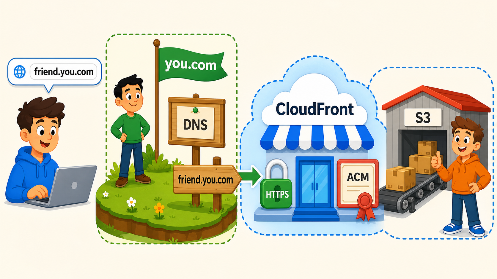
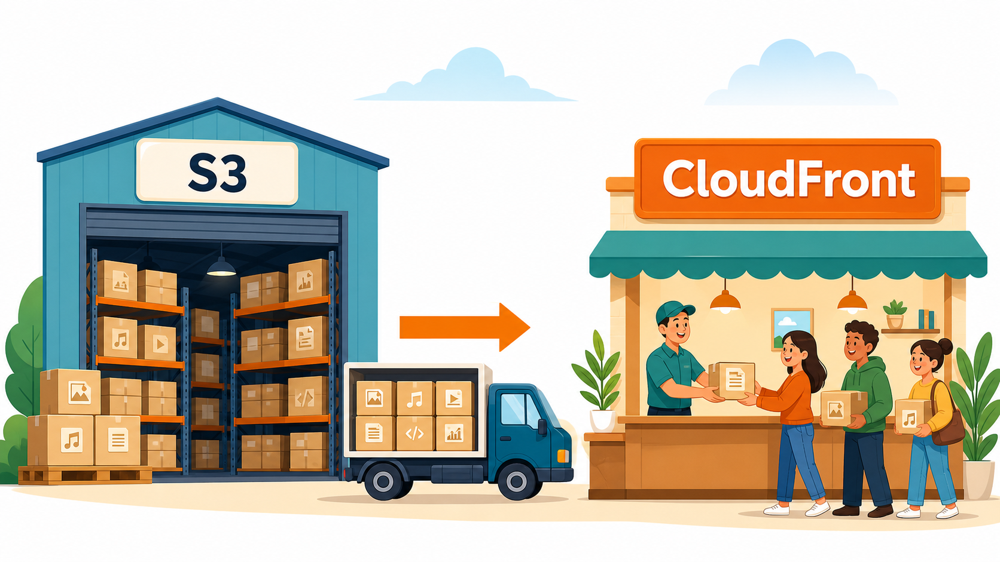
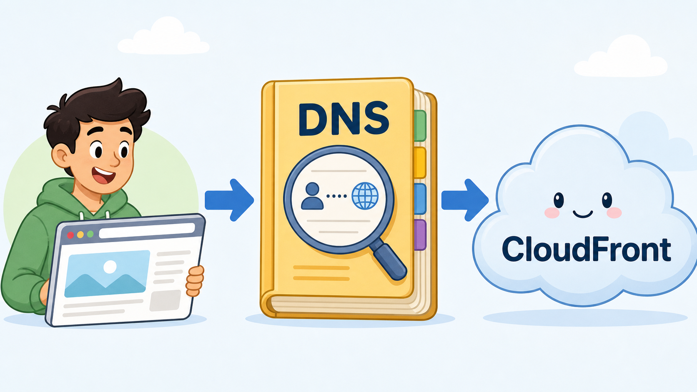
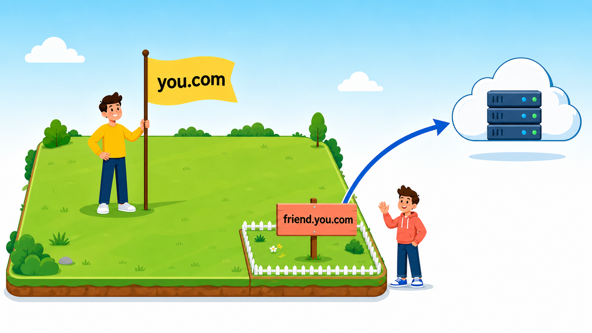
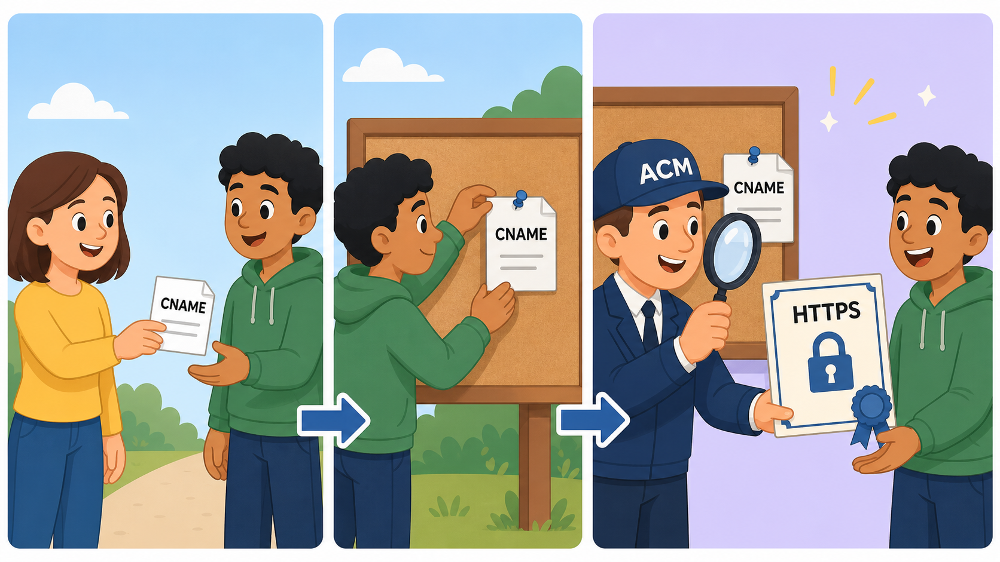
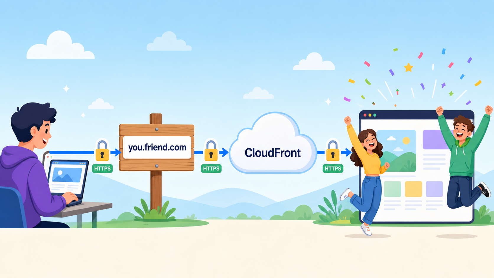
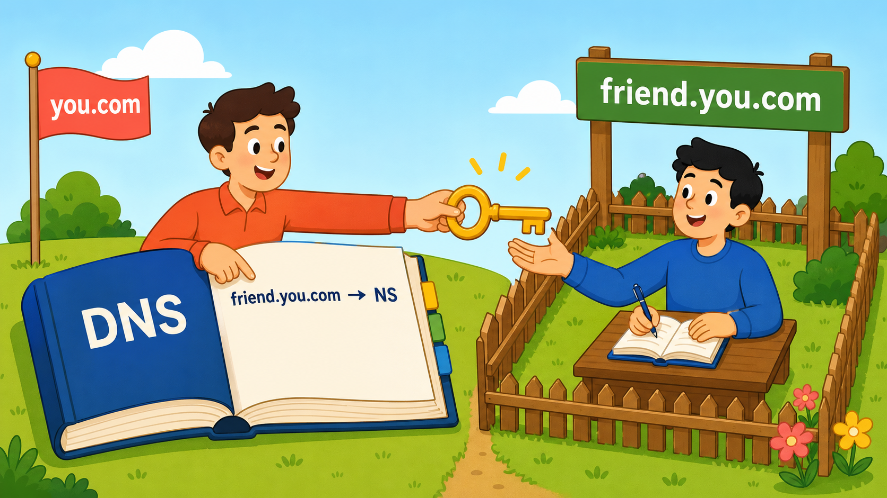

0. まず結論:ゴールまでの一本道

friend.you.com と入力 → あなたの土地(you.com)のDNS看板が案内 → 同期のCloudFront(HTTPSの鍵とACM証明書つき)→ 裏の倉庫(同期のS3)から中身が届く。
看板だけあなたのもの、店と倉庫は同期のもの。役割分担はこれだけです:
同期(資源の持ち主): S3を作った ↓ ① CloudFrontを作って S3 を配信する …「店」を開く ↓ ② ACMで friend.you.com の証明書を取る …「身分証」を作る ↓ └ 検証用CNAMEを【あなた】に送る あなた(ドメインの持ち主): ↓ ③ 自分のホストゾーンに検証用CNAMEを追加 …「持ち主の許可印」を押す 同期: ↓ ④ CloudFrontに friend.you.com と証明書を設定 …店に「看板名」を登録 ↓ └ CloudFrontのアドレスを【あなた】に送る あなた: ↓ ⑤ 本命のAlias/CNAMEレコードを追加 …電話帳に同期の店を載せる ゴール: https://friend.you.com で同期のサイトが開く🎉
つまりあなたの作業はレコードを2回追加するだけ。残りは全部、資源の持ち主である同期の作業です。それぞれの工程が「何のためにあるのか」を順に説明します。
1. なぜ同期はS3だけじゃダメなの?(CloudFrontの存在理由)

同期がS3にHTMLや画像を上げました。S3はあくまでファイル置き場(倉庫)です。 「静的ウェブサイトホスティング」で一応公開もできますが、今回の課題では手前にCloudFront(店頭)を置きます。
理由1:HTTPS(鍵マーク)のため。
S3のウェブサイト機能は http://〜 しか話せません。独自ドメイン(friend.you.com)で
https://〜 にするには、証明書を「着てくれる」役者が必要で、それがCloudFrontです。S3は証明書を着られません。
理由2:独自ドメイン名で受け付けるため。 「friend.you.com でアクセスされたらこのサイトを出す」という受付設定ができるのはCloudFront側です。
理由3(おまけ):世界中に速く配信するため。CloudFrontはCDNなので表示も速くなります。
同期の作業①:CloudFrontを作る
同期がやること:
- CloudFront → 「ディストリビューションを作成」
- オリジンに自分のS3バケットを選ぶ。オリジン=店に商品を卸す倉庫のこと。
- 「オリジンアクセスコントロール(OAC)」を有効にすると、S3を非公開のままCloudFront経由でだけ見せられる(推奨。画面の案内どおりバケットポリシーを貼る)。
- 「デフォルトルートオブジェクト」に
index.html。これがないと「トップページはどれ?」をCloudFrontが知らずエラーになる。 - できあがった
d1234abcd.cloudfront.netを開いて自分のサイトが見えたら①完了。
この時点で同期のサイトは「変な英数字のアドレスなら世界中から見える」状態。
ここから先は全部、このアドレスに friend.you.com というちゃんとした名前を付けるための作業です。
2. 名前を付けるのに、なぜあなたの出番?(DNSの存在理由)

ブラウザに friend.you.com と打つと、ブラウザはまずDNS(インターネットの電話帳)に
「friend.you.com ってどこ?」と聞きます。電話帳に「それは d1234abcd.cloudfront.net(同期の店)のことだよ」と
書いてあれば、閲覧者は同期のCloudFrontにたどり着けます。
you.com の電話帳のページ(Route 53のホストゾーン)は、
ドメインを買ったあなたのAWSアカウントの中にあります。電話帳に書き込めるのは持ち主だけ。
friend.you.com は you.com の一部なので、同期がどう頑張っても自分では書き込めません。
だから同期は「このレコードを足して」とあなたにお願いしてきます。
これが課題名「サブドメインの委任」の意味——あなたの土地の一角を同期に貸してあげるということです。

3. なぜ先に証明書?(ACMの存在理由)
「じゃあ早速レコードを足してあげよう」…の前に、まず証明書です。 HTTPSには「私は本物の friend.you.com です」と証明するSSL/TLS証明書が必要で、 AWSではACMが無料で発行します。証明書を使うのは同期のCloudFrontなので、リクエストするのは同期です。
証明書がないとブラウザは「この店、本物か分からない」と警告画面(あの真っ赤な「保護されていません」)を出します。
証明書は店の営業許可証+身分証。そしてCloudFrontには
「friend.you.com の看板を掲げたいなら、その名前の有効な証明書を先に見せて」というルールがあるので、
証明書が先、看板が後という順番は動かせません。
もし誰でも「私が friend.you.com です」と言って証明書をもらえたら、偽サイトが作り放題です。 そこでACMは「その名前のDNS(=あなたの電話帳)に、指定した合言葉を書けるか?」で確認します。 あなたの電話帳に書けるのはあなただけ→合言葉が書かれた=ドメインの持ち主(あなた)が、同期がこの名前を使うことを認めた、という証明になるのです。

同期の作業②:証明書をリクエストする
同期がやること:
- コンソール右上でリージョンを「バージニア北部(us-east-1)」に切り替える。
- ACM → 「証明書をリクエスト」→「パブリック証明書」。
- ドメイン名に
friend.you.comを入力。検証方法は「DNS検証」。 - 詳細画面に出る「CNAME名」「CNAME値」をコピーしてあなたに送る(状態は「検証保留中」のままでOK)。
⚠ なぜ us-east-1 じゃないとダメ? CloudFrontは世界中で動くサービスなので、証明書は「CloudFrontの本社所在地」であるus-east-1に置く決まりです。 東京リージョンで作った証明書は選択肢に一切出てきません。全国のハマりポイント第1位。同期に必ず伝えてあげてください。
あなたの作業①:検証用CNAMEを追加する
あなた同期から届いた2つの値を、自分のホストゾーンに登録します:
- Route 53 → ホストゾーン →
you.com→ 「レコードを作成」 - レコード名:届いたCNAME名のうち
.you.com.より前の部分(例:_a1b2c3.friend) - タイプ:CNAME / 値:届いたCNAME値をそのまま貼る → 保存
5〜30分ほどで、同期のACM画面が「発行済み(Issued)」に変わります。同期に「発行された?」と確認しましょう。
4. 看板の設置(CloudFrontへの設定と、本命レコード)
同期の作業③:CloudFrontに「名前」と「証明書」を登録
同期がやること:
- CloudFront → 自分のディストリビューション → 設定を編集
- 「代替ドメイン名(CNAME)」に
friend.you.comを追加 - 「カスタムSSL証明書」で、発行された証明書を選ぶ
- 保存 → デプロイ完了(数分)後、「ディストリビューションドメイン名」(
d1234abcd.cloudfront.net)をあなたに送る
CloudFrontは、知らない名前で訪ねてこられると門前払い(403エラー)します。 「代替ドメイン名」の登録は、同期の店に「friend.you.com という名前でもお客を受け付けてOK」と教える作業。 証明書の設定は、その名前でHTTPSの応対をするための身分証を店に持たせる作業。 どちらか片方でも欠けると、名前でアクセスした瞬間にエラーになります。
あなたの作業②:本命のレコードを追加する(これで完成)
あなた自分のホストゾーンに、どちらか一方を追加:
- おすすめ:Alias — レコード名
friend、タイプ A、「エイリアス」ON →「CloudFrontディストリビューション」→ 同期から届いたd1234abcd.cloudfront.net - または CNAME — レコード名
friend、タイプ CNAME、値d1234abcd.cloudfront.net
これが電話帳への正式な掲載です。ここまでの工程は全部「店側(同期側)の準備」で、
世界中の誰かが friend.you.com と打っても、あなたの電話帳に載っていなければ誰もたどり着けません。
このレコード追加の瞬間に、初めて「あなたのドメインの名前 → 同期の店」の道がつながります。
ふたりで:動作確認
- ブラウザで
https://friend.you.com→ 同期のサイトが表示されて鍵マークが付けばゴール🎉 - ターミナル派なら:
dig friend.you.com(cloudfront.net に向いてるか)/curl -I https://friend.you.com(200が返るか)

5. ちなみに:これはお互い様の課題
逆方向(あなたのS3を同期の you.friend.com で公開)をやるときは、上の手順の役割を全部入れ替えるだけです。
| 作業 | 同期のサイト公開(friend.you.com) =このガイド | あなたのサイト公開(you.friend.com) =逆方向 |
|---|---|---|
| S3+CloudFrontを用意 | 同期 | あなた |
| ACMで証明書をリクエスト(us-east-1) | 同期(friend.you.com 名義) | あなた(you.friend.com 名義) |
| 検証用CNAMEをホストゾーンに追加 | あなた(you.comの電話帳) | 同期(friend.comの電話帳) |
| CloudFrontに名前+証明書を設定 | 同期 | あなた |
| 本命のAlias/CNAMEを追加 | あなた | 同期 |
覚え方は一行:「資源(S3/CloudFront/証明書)のことは資源の持ち主がやる。電話帳(ホストゾーン)への書き込みだけは、ドメインの持ち主がやる」。
6. よくあるハマりどころ
| 症状 | 原因と対処 |
|---|---|
| (同期)証明書がCloudFrontの選択肢に出ない | us-east-1以外で作っている。us-east-1で作り直してもらう。 |
| (同期)証明書がずっと「検証保留中」 | あなたが追加したCNAMEのタイプミス、または名前の二重サフィックス(Route 53はレコード名に自動で .you.com を付けるので、フル名を貼ると …you.com.you.com になる)。あなた側の設定を見直す。 |
| 403エラー/CloudFrontのエラー画面 | 同期側の「代替ドメイン名」設定忘れ。CloudFrontは知らない名前を門前払いする(§4参照)。 |
| cloudfront.netでは見えるのに friend.you.com で見えない | あなたの本命レコード(作業②)が未追加か反映待ち。dig で確認して5〜30分待つ。 |
| トップは見えるがサブページで AccessDenied | 同期側のOACのバケットポリシー未設定、またはデフォルトルートオブジェクト未設定。 |
7. 同期から届くはずのメッセージ(と、あなたの返し方)
同期からはこの2通が届くはずです。届いたらそれぞれ自分のホストゾーンに追加すればOK:
依頼①(証明書の検証用): you.com のホストゾーンにこのCNAMEを追加してほしい。 レコード名: _a1b2c3d4e5.friend.you.com タイプ: CNAME 値: _f6g7h8i9j0.abcdefghij.acm-validations.aws → あなた: レコード名「_a1b2c3d4e5.friend」で CNAME を追加 依頼②(公開用、①の証明書が発行されてから): friend.you.com を私のCloudFrontに向けてほしい。 値: d1234abcd.cloudfront.net → あなた: レコード名「friend」で A(エイリアス)→ CloudFront を追加
8. (発展)方法b:レコードを足す代わりに「委任」する
ここまでの方法aは、同期に頼まれるたびにあなたが自分の電話帳にレコードを書いてあげるやり方でした。 方法bはもっと思い切った渡し方です: 「friend.you.com から先のページは、まるごと同期の電話帳を見てくれ」と1回だけ書いて、あとの管理を全部同期に任せる。 これがDNSの委任(delegation)で、そのために使うのがNSレコードです。

方法aでは、同期が「証明書の検証CNAME足して」「CloudFront変えたから値を更新して」と言うたびに、 毎回あなたの手を借りる必要がありました。あなたが旅行中なら同期の作業は止まります。
方法bでは、最初の委任だけあなたがやれば、それ以降 friend.you.com 配下のレコードは同期が自分のAWSアカウントで自由に作成・変更・削除できます。
ACMの検証CNAMEも、CloudFrontへのAliasも、なんなら blog.friend.you.com みたいな孫サブドメインも、全部同期が自己完結。
実際の会社でも「部署ごと・サービスごとにサブドメインを委任して、各チームが自分で管理する」のはよくある運用です。
NS = Name Server。「この名前の担当は、この電話帳(ネームサーバー)です」という案内板です。
実は you.com 自体も、世界の大元の電話帳から「you.com の担当は Route 53 のこの4台」とNSレコードで委任されて動いています。
方法bは、同じ仕組みをもう一段深く自分でやるだけ——DNSという仕組みの根幹を体験できるので「発展」課題になっているわけです。
手順(このガイドの向き:あなた=you.comの持ち主、同期=資源の持ち主)
Step 1:同期自分のAWSアカウントの Route 53 で、friend.you.com という名前のホストゾーンを新規作成する。
作成すると、AWSが自動でNSレコード(ネームサーバー4台の名前)を発行します。例:
ns-123.awsdns-45.com ns-678.awsdns-90.net ns-234.awsdns-56.org ns-789.awsdns-12.co.uk
この4行をコピーしてあなたに送る。これが「同期の専用電話帳の住所」です。
Step 2:あなた自分の you.com のホストゾーンにレコードを1つ追加:
- レコード名:
friend - タイプ:NS
- 値:同期から届いた4行をそのまま貼る
意味:「friend.you.com について聞かれたら、うちでは答えません。この4台(同期の電話帳)に聞いてください」という案内板を立てた。 あなたの作業はこの1回で終わり。以降は何もしなくていい。
Step 3以降:同期自分のホストゾーンの中で、方法aで登場したレコードを全部自分で作る:
- ACMで
friend.you.comの証明書をリクエスト(us-east-1)→ 検証用CNAMEを自分のホストゾーンに自分で追加 → 発行 - CloudFrontに代替ドメイン名
friend.you.com+証明書を設定 - 自分のホストゾーンに Alias(A)レコード:
friend.you.com→ 自分のCloudFront
誰にも頼まず完結。https://friend.you.com が開けばゴールです。
⚠ 方法bのハマりどころ
- NSレコードの値の写し間違いが事故の9割。4行を1文字も違わずコピペすること。1台でも間違うと「ときどき繋がらない」という一番嫌な壊れ方をする。
- 同期がホストゾーンを作り直したらNSの4台も変わる。その場合はあなたのNSレコードも更新が必要。
- ホストゾーンは1つ月額$0.50かかる(方法aは追加費用ゼロ)。払うのは新しいゾーンを作った側=委任される側(このガイドの向きでは同期)。「自分専用の電話帳を持つ人が、その電話帳代を払う」と覚える。課題が終わったら消すのを忘れずに。
- 委任後は
friend.you.com配下の管理権が完全に同期に移る。信頼できる相手にだけやること(会社でいうと部署に印鑑を渡すのと同じ)。
💬 どっちを選ぶ? 1回きりの課題なら方法aが簡単・無料。 「同期が今後も自由にレコードをいじる」「DNSの仕組みを根っこから理解したい」なら方法b。 課題文の通り(b)は任意なので、aで公開まで通してから、余裕があればbに切り替えてみるのが一番学びが多いルートです (切り替え=あなたのAlias/CNAME/検証CNAMEを消してNSレコード1本に置き換えるだけ)。
※課題文の(b)は「同期のドメインで you.friend.com をあなたに委任してもらう」向きで書かれています。その場合は上の手順の役割を入れ替えるだけ:あなたが you.friend.com のホストゾーンを作ってNS4台を同期に送り、同期が自分のゾーンにNSレコードを1本追加。以降あなたが自己完結で管理できます。